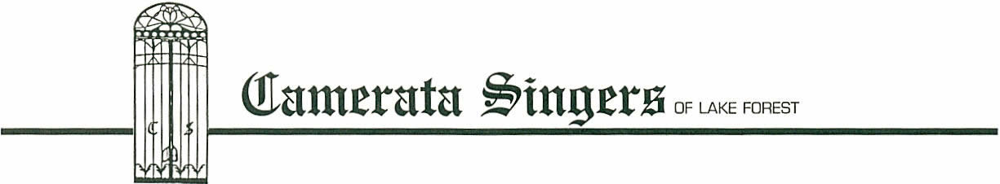

The Board of the Camerata Singers of Lake Forest is
proud to present the 2007/2008 concert schedule. Music Director/Conductor Julia Davids is back for her
fourth season with Camerata, and she has prepared a wonderful series of
concerts for us. Camerata concerts are
presented primarily in private homes similar to a style prevalent in eighteenth
century Europe. Singers and audience
can interact in a very special way. The
wonderfully spacious homes of the Lake Forest area are ideally suited for this presentation
style. For additional information on
Camerata please visit our website, www.cameratasingers.org The ticket price includes an elegant
reception with wine, appetizers and desserts.
All concerts are on Sunday afternoons, with performances at 2:30 p.m.
and 5:00 p.m. Guests for the 5:00 p.m. concert arrive at 4:00 p.m. to
participate in the reception which takes place during the hour between the two
concerts. This year’s series will
consist of four concerts as follows:
Sunday,
December 2nd, 2007
– The
Celestial Harp - Celebrate the
Christmas season with Camerata and guest harpist, Lillian Lau. You’ll enjoy the soothing timbre of the harp
featured in Benjamin Britten’s much-loved ‘Ceremony of Carols’, Rutter’s
‘Tomorrow Shall Be My Dancing Day’ and two Spanish carols. Traditional American Christmas favorites
‘I’ll Be Home for Christmas’ and ‘It’s the Most Wonderful Time of the Year’
will round out a seasonal celebration!
Sunday,
February 10th, 2008 –
Due
North II – Join us for another
excursion to conductor Julia Davids’ homeland, the great white north of
Canada! Featured works include Imant
Raminsh’s moving and rhythmic ‘Magnificat’ for mezzo soprano soloist, chorus
and piano. Emerging Canadian composer
Jeff Enns will be featured with two of his stunning new compositions. Folk songs arranged by Stephen Chatman will
illustrate the diversity of Canada. Chatman’s original composition ‘Remember’
and Allister MacGillivray’s ‘Here’s To Song’ are poignant reminders of the
important things in life.
Sunday,
April 6th, 2008 –
American
Explorer – Grab your suitcase,
no passport needed as Camerata takes you across America to hear some of this
country’s most wonderful music! From
early composer William Billings to Stephen Foster’s ‘Camptown Races’, to Samuel
Barber’s ‘Sure on this Shining Night’ to contemporary composer Morten
Lauridsen’s ‘Chanson des Roses’, you’ll hear the diversity and beauty of this
country reflected in diverse and beautiful music!
Sunday,
June 8th, 2008 – The
Camerata Songbook! - In Camerata tradition, we will finish the season
with a concert featuring the singer’s choice of great songs. German lieder, French chansons, Italian lied
and English and American songs will be sung by the talented soloists of
Camerata and the ensemble. There is
sure to be something for everyone as we open the Camerata Songbook!
The Camerata Experience continues to be one of the
best bargains on the North Shore. Our
prices for this year will be $88/person for a 4-concert series, $69/person for
a 3-concert mini-series (you pick the dates) and $29/person for a single
concert. Please enclose your check
with your subscription request.
While you are filling out your
subscription form, please
consider making a donation to the Camerata program. The generous contributions of our friends,
plus the success of our advertising brochure, has enabled the Camerata program
to expand and improve over the years.
We thank you for your consideration and support, and we look forward to
seeing you in our upcoming season.